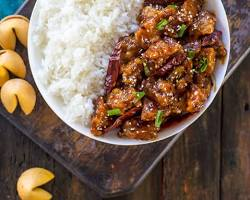

Home
Chicken with Rice and Spices recipe

Description
Chicken with Rice and Spices is a comforting, one-pot dish that's rich in aroma and flavor. This meal typically features tender pieces of chicken (often thighs or drumsticks) browned and then simmered with long-grain rice in a fragrant broth. The dish gets its signature warmth from a blend of aromatic spices, which often includes staples like turmeric, cumin, coriander, and cardamom, giving it a beautiful golden hue and deep, complex taste. It's a satisfying, complete meal perfect for a cozy dinner.
Ingredients:
- Protein: Boneless, skinless Chicken (thighs or breasts)
- Starch: Long-Grain White Rice (like Basmati or Jasmine)
- Liquid:Chicken or Vegetable Broth (or water)
- Aromatics:Onion and Garlic
- Oil:Cooking oil (Olive or Vegetable)
- Essential Spices:
- Turmeric
- Cumin
- Ground Coriander
- Cardamom (optional)
- Paprika (optional)
- Salt and Black Pepper
- Optional Spices/Seasonings:Paprika, Dried Thyme, Cardamom, or Cinnamon.
- Garnish (Optional):Fresh Parsley or Cilantro
Steps:
- Prepare the Chicken: Season the chicken pieces with salt, pepper, and a bit of turmeric. In a large skillet or pot, heat oil over medium-high heat. Add the chicken and brown on all sides until golden. Remove the chicken and set aside.
- Sauté Aromatics: In the same pot, add a bit more oil if needed. Sauté chopped onions until translucent, then add minced garlic and cook for another minute until fragrant.
- Add Spices: Stir in the essential spices (turmeric, cumin, coriander) and any optional spices you're using. Cook for about 1 minute to toast the spices and enhance their flavors.
- Add Rice: Add the rice to the pot and stir well to coat the grains with the oil and spices. Cook for 1-2 minutes to lightly toast the rice.
- Add Liquid: Pour in the chicken broth (or water) and bring to a boil. Scrape up any browned bits from the bottom of the pot for extra flavor.
- Simmer: Return the browned chicken pieces to the pot, nestling them into the rice. Reduce heat to low, cover, and simmer for about 20-25 minutes, or until the rice is cooked and the chicken is tender.
- Rest and Fluff: Once cooked, remove from heat and let it sit covered for about 5 minutes. Then fluff the rice with a fork.
- Garnish and Serve: Garnish with chopped fresh parsley or cilantro if desired. Serve hot and enjoy!